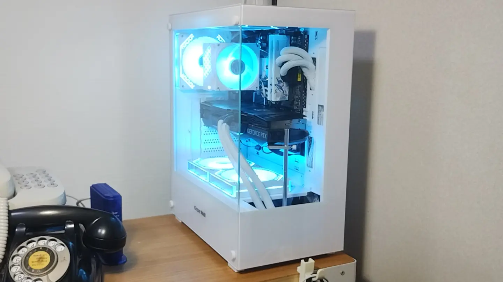

スクラのパソコン
スクラの使っているパソコン
マウスコンピューターDAIV A5改
2022年購入。VRChatをやるために知人経由で中古購入したPC。もともとはGTX1650が載っていたらしいが、RTX3060 12GBに換装されていた。
| CPU | Ryzen 7 3700X |
| メモリ | CORSAIR DDR4 3200 16GB*2 |
| MB | ASRock B550 Phantom Gaming 4 |
| GPU | MSI RTX3060 12GB |
| SSD1 | Crucial P1 CT500P1SSD8 500GB |
| SSD2 | Samsung 980 1TB |
| SSD3 | 東芝 TLD-M2B50G3 500GB |
| HDD1 | WESTERN DIGITAL WD10EZEX 1TB |
| 光学 | HP DVD-RAM GH60L |
| CPU Cooler | DEEPCOOL AK400 |
| 電源 | 確か玄人志向の650W |
| ケース | マウスコンピューター製 |
中国通販で組んだPC
2025年に組み立てた。最初、アリエクで13,000円で売っていたRyzen 7 5700Xを上記のマウスコンピューターに付けるつもりで買ったところ生えてきてしまったPC。マザボ以外基本的に中国通販、しかも拼多多（Temuと同じ会社の中国国内向け通販、中国人自身が闇市と形容する通販アプリ）で購入。
マザボは拼多多で買ったものが小型すぎてダメだったので秋葉原のツクモで安かったGigabyteのB550を使用。
グラボは日本在住の中国人が自宅でメモリを貼り替えて10GB→20GBに改造したRTX3080を販売者の自宅で直接購入した。
bilibiliにも動画をアップロードしたところ、あまりにも意味不明なパーツの選び方すぎて中国人から総ツッコミを受けた。
このPCの解説動画はこちら
- YouTube
https://www.youtube.com/watch?v=THHp0gq2E4k - bilibili
https://www.bilibili.com/video/BV1bKeazMEgv/
| CPU | Ryzen 7 5700X |
| メモリ | 铭瑄(MAXSUN) DDR4 3200 16GB*2 |
| MB | Gigabyte B550 MK |
| GPU | ZOTAC RTX3080 20GB 魔改 |
| SSD1 | 紫光云彣(UniWhen) 新纪-CQ3000U 512GB |
| CPU Cooler | 超频三(CPS) 红海H4 |
| 電源 | 鑫谷(Segotep) GM750W |
| ケース | 长城 视界S3 MINI 海景房 |
ThinkPad X13 Gen 1
2023年購入。出先で使っているノートPC。一時期Ubuntuを入れていたが、スリープから復帰失敗して電源長押ししたら壊れたので諦めてWin11を入れなおした。
GMKtec G3

Proxmoxを入れているサーバー。N100、メモリ8GB、SSD256GB。